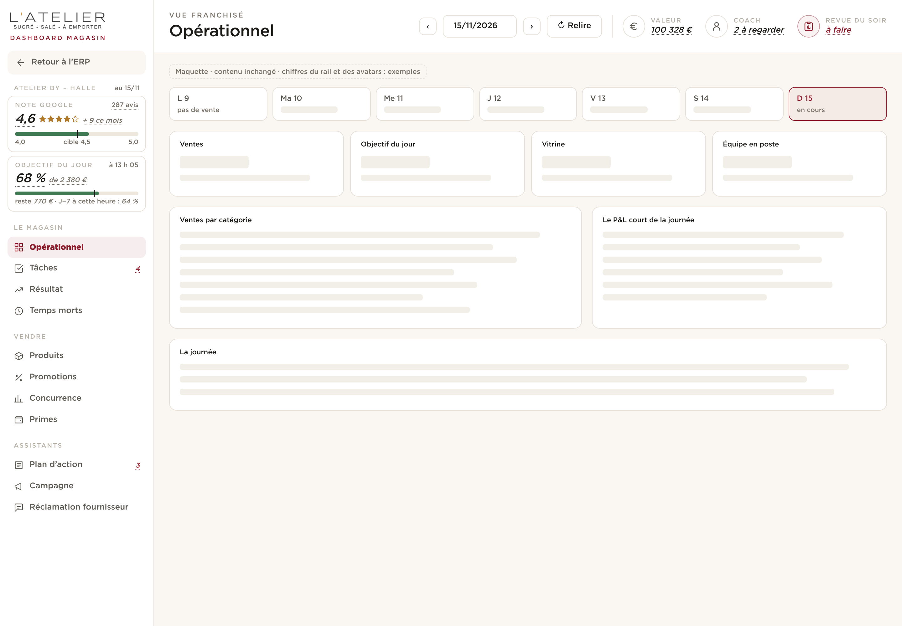
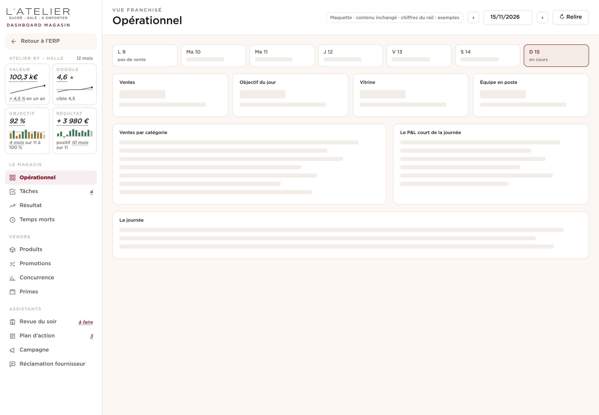
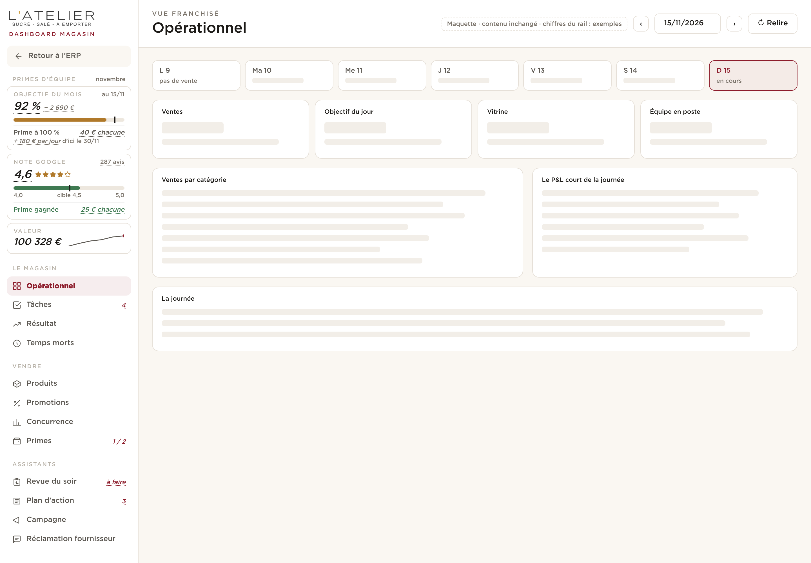
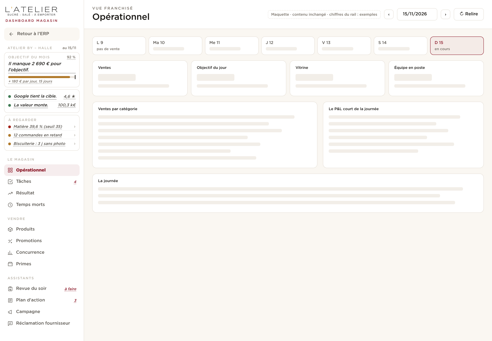

B — Le tableau de bord dans le railchaque repère a sa forme ; Résultat réunit Semaine, Mois, Trimestre et Année en onglets
B1 — Douze moisquatre cartes en grille : la valeur, la note Google, l’objectif et le résultat sur un an
B2 — Les primes en jeul’objectif et la note Google disent ce qu’ils rapportent à l’équipe ; la valeur en une ligne
B3 — Le verdictchaque carte commence par une phrase ; « À regarder » mène où ça cloche